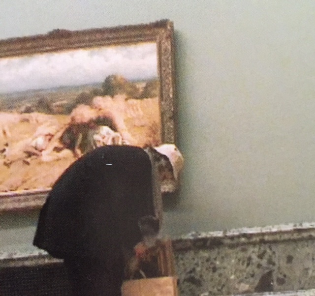
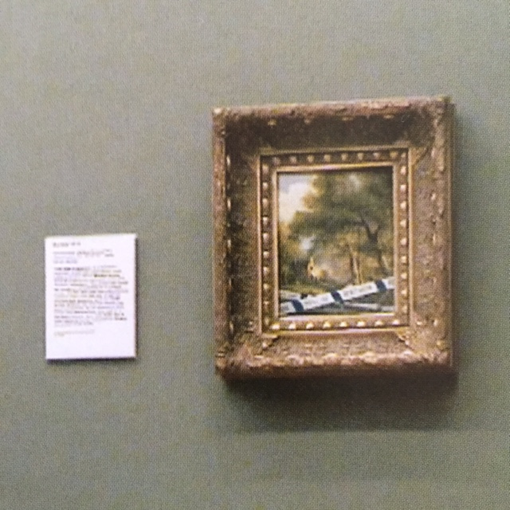
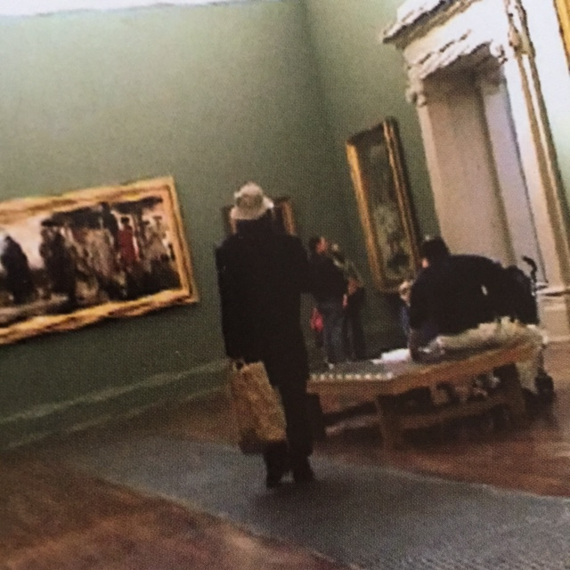
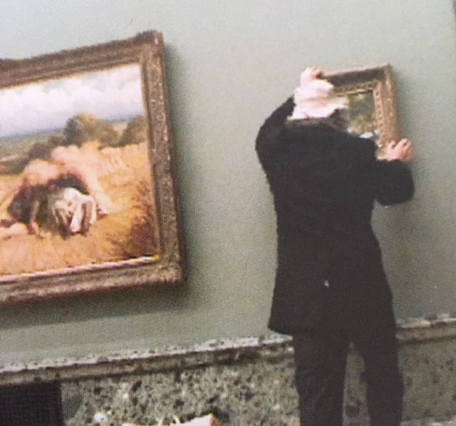
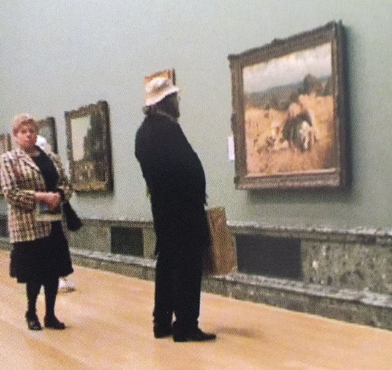
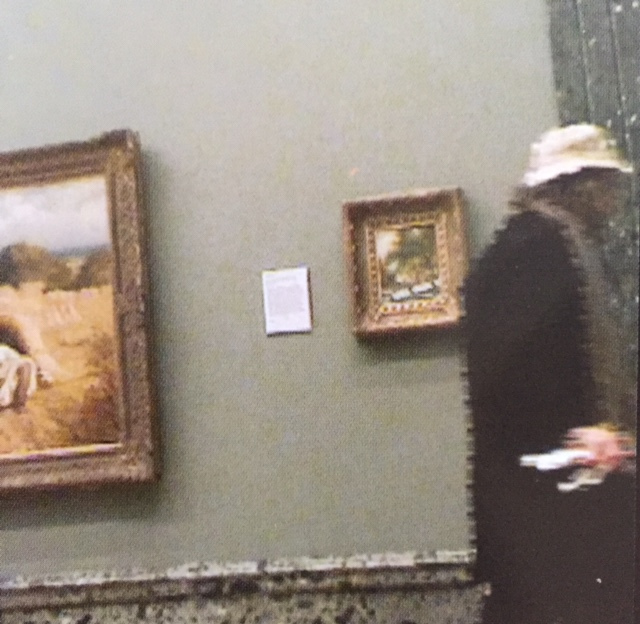

On October 17, Banksy entered Tate Britain disguised as a pensioner and stuck one of his own creations in a vacant slot on one of the gallery’s walls. After a few hours the painting, “Crimewatch UK Has Ruined the Countryside For All of Us”, crashed to the floor and the stunt was discovered.
2003-10
Prints






